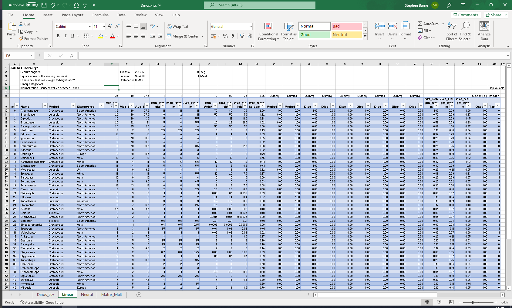
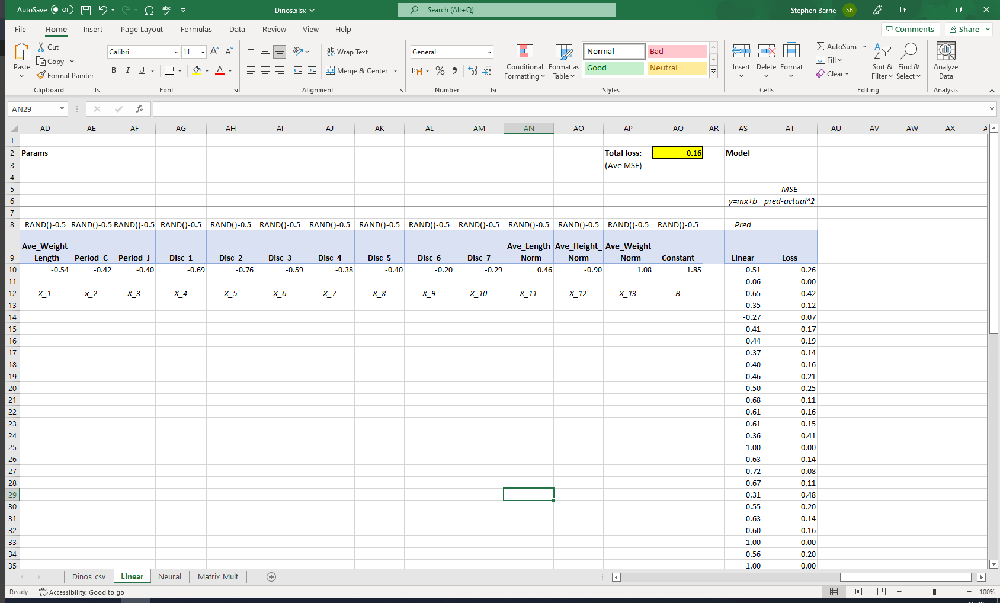
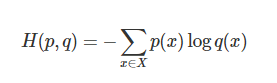
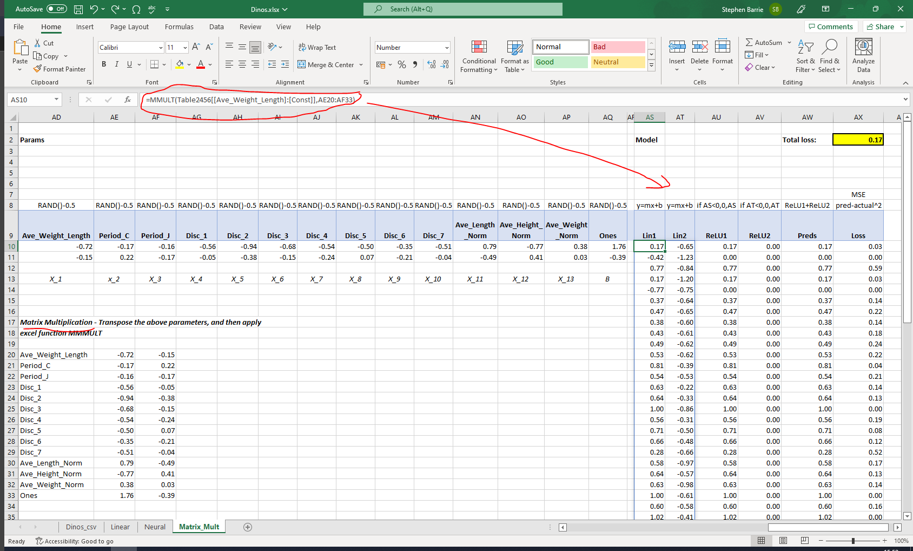
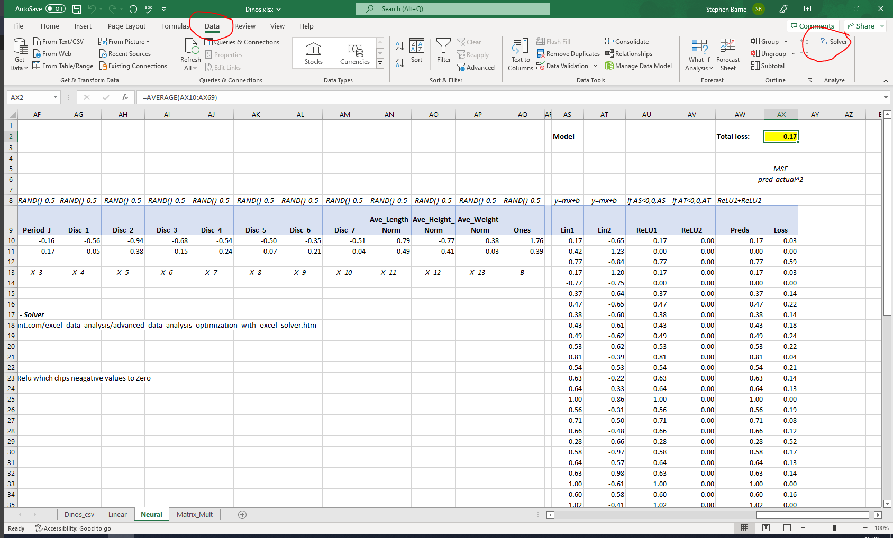
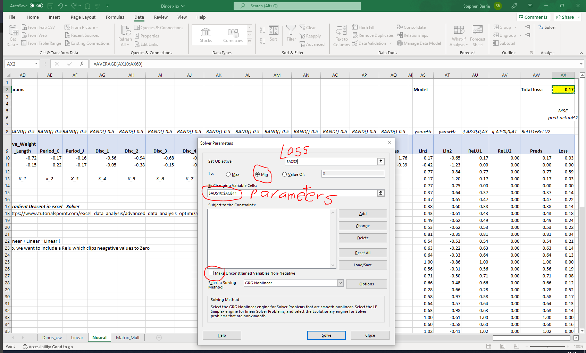

This is my follow up to Lesson 3: Practical Deep Learning for Coders 2022 in which Jeremy built a linear regression model, and neural net from scratch (from the Titanic dataset) using the ‘dinosaur’ named ‘Excelosaurus’!
Creating our dataset
Data source
I managed to ‘reptilicate’ Jeremy’s example by creating my own dataset in Excel from my son’s favourite dino book, which is written in Polish. He is bilingual so thankfully he was able to help me with the translation :)

Independent variables (features)
The book provided some very basic information about each dinosaur:
- Name
- Period (Cretaceous, Jurassic, Triassic)
- Discovered (South America, North America, Europe, Asia etc. - 8 unique locations)
- Min_Len (metres)
- Max_Len (metres)
- Min_Height (metres)
- Max_Height (metres)
- Min_Weight (000 kg)
- Max_Weight (000 kg)These are our independent variables (or features).
Categorical features
Our model needs data in numerical format however as we can see from above, we have values for Period and Discovered which are clearly not numerical. How do we represent these in numerical format?
Well, the trick is to create a dummy variable which creates n-1 columns where n is the number of categories:
for our Period variable ( n(3) - 1 ) = 2 columns created
for our Discovered variable ( n(8) - 1) = 7 columns createdWe then populate these columns with a numerical value of 1 to indicate that our dino falls into that category, or 0 to signal that it does not.
Feature engineering
Due to the nature and limited number of features provided by the book I performed some very basic feature engineering to try to help our model with its predictions.
Creating new features
I created some new features from the existing info:
- Ave_Len
- Ave_Height
- Ave_Weight
- Ave_Weight_LengthNormalization
Another thing I noticed was that the values for the dino dimensions are very large in comparison to our newly created dummy variables, and risk dominating our model, relegating the categorical features, which may actually hold some predictive insight! To counter this I used a simple normalization technique to squeeze the values for the dino dimensions between 0 and 1, by dividing each of the original values by the maximum value for that column. This results in a maximum value of 1 for the largest original value (anything divided by itself = 1) with the other values spread out proporionately betweeen 0 and 1.
Dependent | Target variables (labels)
The book also classified the dinos as either:
- roslinozernosc (veggie) ; or
- miesozernosc (meat-eater)These are our dependent or target variables (or labels).

Linear model
Our task here can be represented on a basic level by a linear model
y = wx + b
where we try to map the independent variables x_1, x_2, …, x_n (our dino features) to our target variable y (1 = meat eater, 0 = veggie).
We already have our values for x and y, and because our dummy variables already cover the entire dataset e.g. there’s a column for “Cretaceous”, “Jurassic”, and “Triassic”, and every dino in the dataset was around during exactly one of these; therefore, we don’t need a separate intercep(or bias) term b to cover rows that aren’t otherwise part of a column.
That just leaves us to compute the values for w - the weights applied to each of our features!
Weights | Parameters
The first step is to initilaise random weights | parameter for each of our chosen input features. To do this in excel:
= RAND()-0.5Subtracting -0.5 is an arbitrary technique, but it is useful as it tightens up the random values around either side of zero.

Now that we have our weightings, we can populate our Prediction column, which takes our feature values and multiplies them by our randomly generated weightings.
We can use the SUMPRODUCT function within excel to performs this quickly and efficiently across all rows of our dataset in one fell swoop!
=SUMPRODUCT(Table2[@[Ave_Weight_Length]:[Ones]],$AD\(10:\)AQ$10)
Calculating our loss
It is important from the outset to specify which loss function is to be used. There are a number of different loss functions and it is often unclear which should be used for the particular task at hand. This article provides a useful guide.
Mean squared error

I chose mean squared error (as used in Jeremy’s Titanic dataset walkthough) as my loss function. Our task, predicting whether a dino is a meat eater [1] or veggie [0] is a binary classification problem, similar to the Kaggle Titanic competition, where the task was to predict survived or not-survived.
For each dino we simply square the difference between our prediction value (BB10) and the target value (Table2(@Target). The squared error for one dino prediction is calculated in excel as follows:
=(BB10-Table2[@Target])^2Our total loss or MSE is then simply the average across all n (60) dinos:
=AVERAGE(BD10:BD69)Cross-entropy loss
Having done some digging on loss functions, there is the suggestion that Cross-entropy is the default loss function to use for binary classification problems. The mathematical formula is:

It turns out Jeremy posted a very useful video a few years back on how to calculate this using Excel and there is a useful summary provided here by Aman Arora.
A neural network
We can add another linear layer to our exisitng linear model, although this in itself would not constitute a neural network. What we can do however, is add rectified linear activation functions or ReLU for short.
In simple terms this function clips the values produced by our linear models so that they all lie between 0 and 1. This can easily be achieved in Excel using an if function:
if AS<0,0,ASOur predictions are then updated to include the outputs from both linear models and the two ReLUs, and our loss also updated accordingly with reference to the original unchanged target values - meat-eater [1] veggie [0].
Using Matrix Multiplication
Matrix Multiplication is one of the most fundamental computational tasks and, one of the core mathematical operations in today’s neural networks. Not the sort of thing you might expect to be found in Excel perhaps? Well it turns out that there is function called MMULT built into excel.
All we need to do is transpose our randomized weights and our features, so that the input features are now the rows, and the weights values are incuded in column format.

An example from one of the cells from our linear model prediction is included below:
=MMULT(Table2456[[Ave_Weight_Length]:[Const]],AE20:AF33)The first part of the formula:
Table2456[[Ave_Weight_Length]:[Const]]is the range over which we are computing matrix multiplicaiton - i.e our features data
The second part of the formula:
AE20:AF33is our parameters/weightings
Finally, it’s time to now update our initial randomized parameters using Gradient Descent, which we can do in excel!
Gradient Descent

Gradient descent is an optimization algorithm used to minimize some function by iteratively moving in the direction of steepest descent as defined by the negative of the gradient. In machine learning, we use gradient descent to update the parameters of our model. Parameters refer to coefficients in Linear Regression and weights in neural networks.
It might be that you are familiar with Solver function within Excel, as part of an optimization strategy? Well this is basically Gradient Descent to give it another name.
We can use this Solver function to optimise our loss function.
The steps required within excel are as follows:
click on the Data tab then select the Solver function (as highlighted below) Note, you may have to add this function to your dashboard. See this guide for details on how to do this.
Set Objective: enter the cell reference for your total loss
To: select Min (we are seeking to minimise our total loss)
By Changing Variable cells: select the range of our parameters (we want to update our original randomized values)
Make Unconstrianed Variables Non-Negative: ensure this is UNticked
Select a Solving Method: select GRG Nonlinear from the dropdown
Finally, hit Solve and wait a few moments. You should find that your parameters have been updated to optimal values, and your total loss has reduced.


Final thoughts
The main takeaway from this project, apart from hanging out with my son, and finding out about cool dinos, is that I have successfully managed to:
- create my own dataset from scratch
- clean the data and perform some feature engineering
- carry out Matrix Multiplication within Excel using the MMULT function

- carry out Gradient Descent within excel using the Solver function
This exercise really consolidated my understanding of the architecture of linear and neural models, and hopefully, some of the techniques included in this NoteBook prove to be helpful to other data science newcomers like me. Looking forward to Lesson 4!